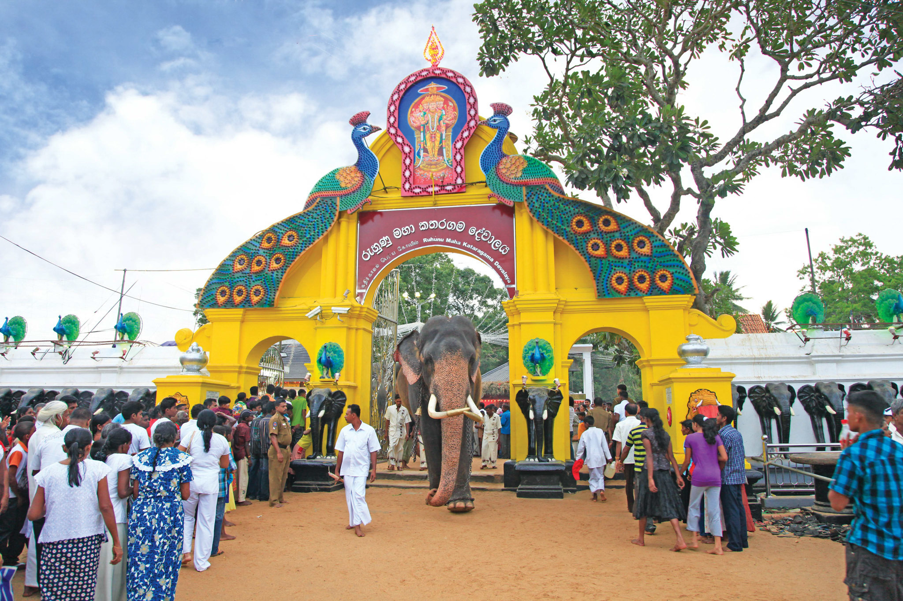

Kataragama
Kataragama (Sinhala: කතරගම, translit. Kataragama , Tamil: கதிர்காமம், translit. Katirkāmam) is a pilgrimage town sacred to Buddhist, Hindu and indigenous people of Sri Lanka. South Asian people worship this place. The town has the Kataragama temple, a shrine dedicated to the God Skanda Kumara also known as Kataragama deviyo. Kataragama is located in the Monaragala District of Uva province, Sri Lanka. It is 228 km ESE of Colombo, the capital of Sri Lanka. Kataragama was a small village in medieval times, but today it is a developing city because of the attraction of local and foreign tourists.
The ancient Kiri Vehera Buddhist stupa, which is believed to be built by the regional king Mahasena in the 6th century BC is also located in Kataragama area. The town has an important history dating back to the last centuries BCE. It was the seat of government of many Sinhalese kings during the days of Ruhunu kingdom. This city adjoins Yala National Park and several other sanctuaries.